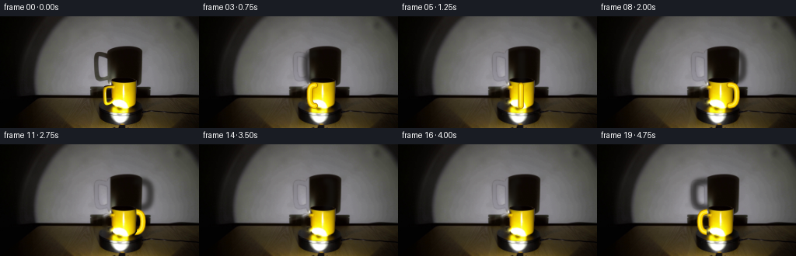
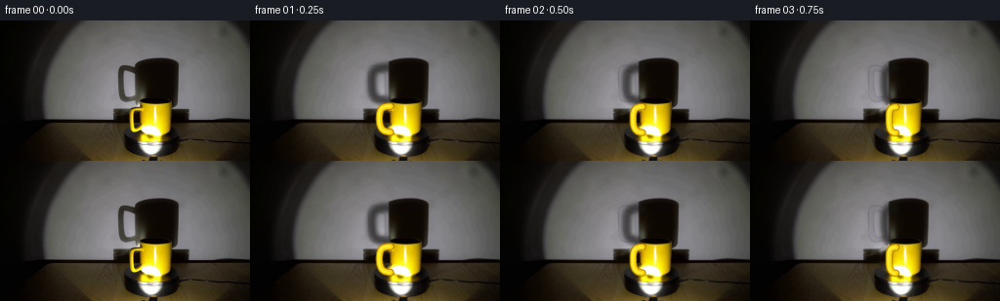
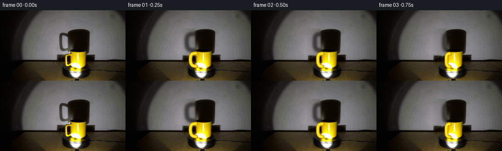
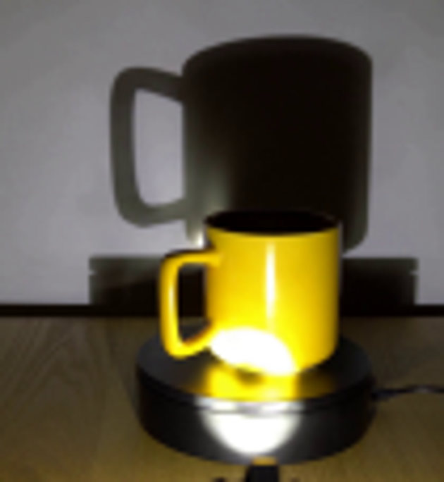
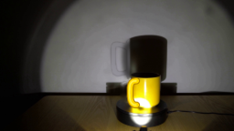
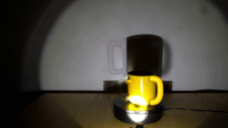
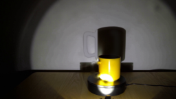
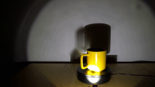
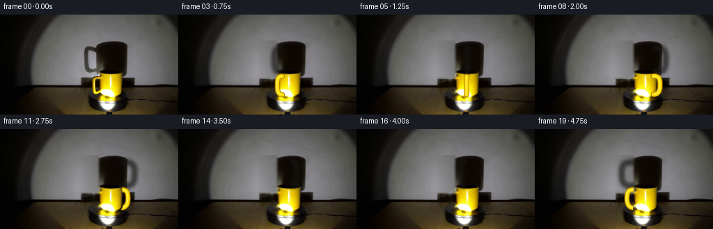

CODING AGENTS AS PIXEL WORLD MODELS
traex/GPT-5.6-Sol · 0077
点击播放 · 原生 RGB 像素
逐轮保存的候选
回放视频、检查图与代码变化。
每份候选均可单独播放。实际图片检查记录在下方工具轨迹中。
候选 01播放与检查图
点击播放 · 原生 RGB 像素

展开代码变化
--- 上一保存版本
+++ 本次保存版本
@@ -0,0 +1,239 @@
+"""Generate the requested locked-camera rotating-mug demonstration.
+
+The photograph supplies all of the scene appearance. The only synthesized
+parts are the changing pose of the mug handle, its corresponding wall shadow,
+and very subtle moving scuffs on the turntable. Rendering is analytic and is
+done at 4x resolution before downsampling for soft photographic edges.
+"""
+
+from pathlib import Path
+import math
+
+import cv2
+import numpy as np
+from PIL import Image
+
+import artifact_io
+
+
+ROOT = Path(__file__).resolve().parent
+W, H = 256, 144
+SS = 4
+
+
+def alpha_over(dst, color, alpha):
+ """Composite a solid RGB color through a floating point alpha mask."""
+ a = np.clip(alpha, 0.0, 1.0)[..., None]
+ return dst * (1.0 - a) + np.asarray(color, np.float32) * a
+
+
+def polynomial_wall_model(rgb):
+ """Estimate the smooth, spotlight-lit wall underneath the cast shadow."""
+ yy, xx = np.mgrid[0:H, 0:W]
+ xn = (xx - 128.0) / 128.0
+ yn = (yy - 51.0) / 72.0
+ terms = []
+ for degree in range(6):
+ for i in range(degree + 1):
+ terms.append((xn ** i) * (yn ** (degree - i)))
+ design = np.stack(terms, axis=-1)
+
+ valid = yy < 102
+ # Omit the mug, turntable, and their full central shadow from the fit.
+ valid &= ~((xx > 108) & (xx < 199) & (yy > 31))
+ valid &= rgb.mean(2) > 18
+ ids = np.flatnonzero(valid)
+ # A regular grid is enough and makes regeneration inexpensive.
+ ids = ids[::3]
+ a = design.reshape(-1, design.shape[-1])[ids]
+ fitted = np.empty_like(rgb, dtype=np.float32)
+ for c in range(3):
+ b = rgb[..., c].reshape(-1)[ids].astype(np.float32)
+ coef, *_ = np.linalg.lstsq(a, b, rcond=None)
+ fitted[..., c] = np.tensordot(design, coef, axes=([-1], [0]))
+ return np.clip(fitted, 0, 255)
+
+
+def make_clean_plate(src):
+ """Remove only the original left handle and left handle-shadow."""
+ src8 = src.astype(np.uint8)
+ plate = src.astype(np.float32)
+
+ # The real yellow handle is selected by color, then lightly expanded to
+ # include its warm antialiased fringe. Restricting x prevents damage to
+ # the axisymmetric cup body, which remains photographic in every frame.
+ r, g, b = src[..., 0], src[..., 1], src[..., 2]
+ yy, xx = np.mgrid[0:H, 0:W]
+ handle = ((r > 125) & (g > 95) & (b < 105) &
+ (xx >= 128) & (xx <= 143) & (yy >= 81) & (yy <= 119))
+ handle = cv2.dilate(handle.astype(np.uint8),
+ cv2.getStructuringElement(cv2.MORPH_ELLIPSE, (5, 5)))
+ handle[:, 144:] = 0
+ erased = cv2.inpaint(src8, handle * 255, 4, cv2.INPAINT_TELEA)
+ feather = cv2.GaussianBlur(handle.astype(np.float32), (0, 0), 0.75)
+ plate = plate * (1.0 - feather[..., None]) + erased * feather[..., None]
+
+ # Estimate the unobstructed wall and use the darkness residual to isolate
+ # the cast handle. This retains all of the large cylindrical body shadow.
+ model = polynomial_wall_model(src)
+ darkness = model.mean(2) - src.mean(2)
+ support = ((xx >= 115) & (xx <= 141) & (yy >= 41) & (yy <= 88))
+ sh_alpha = np.clip((darkness - 3.0) / 14.0, 0.0, 1.0) * support
+ sh_alpha = cv2.GaussianBlur(sh_alpha.astype(np.float32), (0, 0), 0.7)
+ plate = plate * (1.0 - sh_alpha[..., None]) + model * sh_alpha[..., None]
+ return np.clip(plate, 0, 255)
+
+
+def highres_stroke(points, width, blur=0.0):
+ """Return a supersampled, rounded polyline mask."""
+ canvas = np.zeros((H * SS, W * SS), np.uint8)
+ pts = np.rint(np.asarray(points) * SS).astype(np.int32).reshape(-1, 1, 2)
+ cv2.polylines(canvas, [pts], False, 255, max(1, int(round(width * SS))),
+ lineType=cv2.LINE_AA)
+ # Round the ends as a real tubular handle has no square terminals.
+ radius = width * SS * 0.5
+ for p in (pts[0, 0], pts[-1, 0]):
+ cv2.circle(canvas, tuple(p), max(1, int(round(radius))), 255, -1,
+ lineType=cv2.LINE_AA)
+ if blur:
+ canvas = cv2.GaussianBlur(canvas, (0, 0), blur * SS)
+ return canvas.astype(np.float32) / 255.0
+
+
+def curve_points(side, depth, shadow=False):
+ """Projected vertical handle loop for a radial angle around the mug."""
+ if shadow:
+ cx = 159.0
+ attach, outer = 19.0, 36.0
+ yt, yo, yb, ya = 48.0, 51.0, 78.0, 82.0
+ drop = 0.7 * depth
+ else:
+ cx = 158.0
+ attach, outer = 15.0, 27.0
+ yt, yo, yb, ya = 87.5, 90.5, 109.5, 114.0
+ drop = 1.6 * depth
+
+ # Sample two cubic Bezier pieces. They form a smoothly rounded D-shaped
+ # loop and naturally collapse to an edge-on tube at front/back poses.
+ p0 = np.array([cx + side * attach, yt + drop])
+ p1 = np.array([cx + side * (outer - 2), yt + drop])
+ p2 = np.array([cx + side * outer, yo + drop])
+ p3 = np.array([cx + side * outer, (yo + yb) / 2 + drop])
+ p4 = np.array([cx + side * outer, yb + drop])
+ p5 = np.array([cx + side * (outer - 3), ya + drop])
+ p6 = np.array([cx + side * attach, ya + drop])
+
+ def bez(a, b, c, d, n=18):
+ t = np.linspace(0, 1, n, endpoint=False)[:, None]
+ return ((1-t)**3*a + 3*(1-t)**2*t*b + 3*(1-t)*t**2*c + t**3*d)
+
+ return np.vstack([bez(p0, p1, p2, p3), bez(p3, p4, p5, p6), p6])
+
+
+def add_cast_handle_shadow(frame, side, depth):
+ points = curve_points(side, depth, shadow=True)
+ soft = highres_stroke(points, 8.5, blur=2.2)
+ soft = cv2.resize(soft, (W, H), interpolation=cv2.INTER_AREA)
+ # The contact with the existing body shadow is slightly denser.
+ return alpha_over(frame, (23, 22, 19), soft * 0.67)
+
+
+def mug_body_occlusion_mask():
+ """Conservative silhouette of the photographic mug body."""
+ m = np.zeros((H * SS, W * SS), np.uint8)
+ # Tapered body with elliptical cap/bottom, deliberately excluding handle.
+ poly = np.array([[142, 82], [175, 82], [176, 112], [171, 120],
+ [148, 122], [141, 116]], np.float32)
+ cv2.fillPoly(m, [np.rint(poly * SS).astype(np.int32)], 255,
+ lineType=cv2.LINE_AA)
+ return m.astype(np.float32) / 255.0
+
+
+BODY_OCC = mug_body_occlusion_mask()
+
+
+def add_mug_handle(frame, side, depth):
+ points = curve_points(side, depth, shadow=False)
+
+ # Warm shaded rim, saturated enamel, and a narrow fixed-light highlight.
+ outer = highres_stroke(points, 7.0, blur=0.20)
+ core = highres_stroke(points, 4.8, blur=0.08)
+ hi_pts = points.copy()
+ hi_pts[:, 0] -= 0.55 # spotlight-facing edge
+ highlight = highres_stroke(hi_pts, 1.15, blur=0.15)
+
+ # Behind the mug, the photographic body hides the central part of the
+ # loop. At front-facing angles it correctly crosses over the body.
+ if depth < -0.03:
+ visibility = 1.0 - BODY_OCC
+ outer *= visibility
+ core *= visibility
+ highlight *= visibility
+ elif depth <= 0.08:
+ # Side-on attachment disappears cleanly into the enamel edge.
+ visibility = 1.0 - BODY_OCC * (0.72 - depth * 3.0)
+ outer *= visibility
+ core *= visibility
+ highlight *= visibility
+
+ # Downsample each coverage layer after compositing at high resolution.
+ hi = cv2.resize(frame.astype(np.float32), (W * SS, H * SS),
+ interpolation=cv2.INTER_CUBIC)
+ hi = alpha_over(hi, (177, 126, 0), outer * 0.96)
+ hi = alpha_over(hi, (255, 218, 0), core * 0.98)
+ hi = alpha_over(hi, (255, 249, 102), highlight * 0.72)
+ return cv2.resize(hi, (W, H), interpolation=cv2.INTER_AREA)
+
+
+def add_rotating_platform_scuffs(frame, phase):
+ """Tiny intrinsic marks make the otherwise black disc's rotation legible."""
+ overlay = frame.copy()
+ alpha = np.zeros((H, W), np.float32)
+ cx, cy = 156.0, 120.5
+ # Elliptical top-disc projection. Three extremely subdued radial scuffs.
+ for base, strength in ((0.35, .11), (2.55, .07), (4.45, .06)):
+ a = base + phase
+ for rr in np.linspace(.72, .92, 9):
+ x = int(round(cx + 29.0 * rr * math.sin(a)))
+ y = int(round(cy - 10.0 * rr * math.cos(a)))
+ if 0 <= x < W and 0 <= y < H:
+ alpha[y, x] = max(alpha[y, x], strength)
+ alpha = cv2.GaussianBlur(alpha, (0, 0), .55)
+ # Avoid drawing on the mug itself or on the front vertical side wall.
+ yy, xx = np.mgrid[0:H, 0:W]
+ ellipse = ((xx-cx)/29.0)**2 + ((yy-cy)/10.0)**2 <= 1.0
+ cup = (xx > 136) & (xx < 179) & (yy < 122)
+ alpha *= ellipse & ~cup
+ return alpha_over(overlay, (132, 126, 104), alpha)
+
+
+def generate():
+ src = np.asarray(Image.open(ROOT / "first_frame.png").convert("RGB"),
+ dtype=np.float32)
+ plate = make_clean_plate(src)
+ frames = []
+ for i in range(20):
+ if i == 0:
+ # Generation contract: exact source pixels, not a reconstruction.
+ frames.append(src.astype(np.uint8).copy())
+ continue
+
+ # One clockwise revolution in five seconds. The camera is fixed.
+ phase = 2.0 * math.pi * (i / 20.0)
+ phi = math.pi - phase
+ side = math.cos(phi)
+ depth = math.sin(phi) # positive = handle in front
+
+ frame = plate.copy()
+ frame = add_cast_handle_shadow(frame, side, depth)
+ frame = add_rotating_platform_scuffs(frame, phase)
+ frame = add_mug_handle(frame, side, depth)
+ frames.append(np.clip(np.rint(frame), 0, 255).astype(np.uint8))
+
+ frames = np.stack(frames)
+ artifact_io.save(frames, ROOT)
+ return frames
+
+
+if __name__ == "__main__":
+ generate()
候选 02播放与检查图
点击播放 · 原生 RGB 像素


展开代码变化
--- 上一保存版本
+++ 本次保存版本
@@ -73,13 +73,17 @@
feather = cv2.GaussianBlur(handle.astype(np.float32), (0, 0), 0.75)
plate = plate * (1.0 - feather[..., None]) + erased * feather[..., None]
- # Estimate the unobstructed wall and use the darkness residual to isolate
- # the cast handle. This retains all of the large cylindrical body shadow.
+ # Estimate the unobstructed wall and use the darkness residual to locate
+ # the cast handle. Dilating its residual is important: otherwise the soft
+ # penumbra would survive as a tell-tale stationary outline.
model = polynomial_wall_model(src)
darkness = model.mean(2) - src.mean(2)
- support = ((xx >= 115) & (xx <= 141) & (yy >= 41) & (yy <= 88))
- sh_alpha = np.clip((darkness - 3.0) / 14.0, 0.0, 1.0) * support
- sh_alpha = cv2.GaussianBlur(sh_alpha.astype(np.float32), (0, 0), 0.7)
+ support = ((xx >= 113) & (xx <= 141) & (yy >= 39) & (yy <= 91))
+ shadow_pixels = ((darkness > 1.6) & support).astype(np.uint8)
+ shadow_pixels = cv2.dilate(
+ shadow_pixels, cv2.getStructuringElement(cv2.MORPH_ELLIPSE, (7, 7)))
+ shadow_pixels[:, 142:] = 0
+ sh_alpha = cv2.GaussianBlur(shadow_pixels.astype(np.float32), (0, 0), 1.35)
plate = plate * (1.0 - sh_alpha[..., None]) + model * sh_alpha[..., None]
return np.clip(plate, 0, 255)
候选 03播放与检查图
候选 04播放与检查图
点击播放 · 原生 RGB 像素


展开代码变化
--- 上一保存版本
+++ 本次保存版本
@@ -25,33 +25,6 @@
"""Composite a solid RGB color through a floating point alpha mask."""
a = np.clip(alpha, 0.0, 1.0)[..., None]
return dst * (1.0 - a) + np.asarray(color, np.float32) * a
-
-
-def polynomial_wall_model(rgb):
- """Estimate the smooth, spotlight-lit wall underneath the cast shadow."""
- yy, xx = np.mgrid[0:H, 0:W]
- xn = (xx - 128.0) / 128.0
- yn = (yy - 51.0) / 72.0
- terms = []
- for degree in range(6):
- for i in range(degree + 1):
- terms.append((xn ** i) * (yn ** (degree - i)))
- design = np.stack(terms, axis=-1)
-
- valid = yy < 102
- # Omit the mug, turntable, and their full central shadow from the fit.
- valid &= ~((xx > 108) & (xx < 199) & (yy > 31))
- valid &= rgb.mean(2) > 18
- ids = np.flatnonzero(valid)
- # A regular grid is enough and makes regeneration inexpensive.
- ids = ids[::3]
- a = design.reshape(-1, design.shape[-1])[ids]
- fitted = np.empty_like(rgb, dtype=np.float32)
- for c in range(3):
- b = rgb[..., c].reshape(-1)[ids].astype(np.float32)
- coef, *_ = np.linalg.lstsq(a, b, rcond=None)
- fitted[..., c] = np.tensordot(design, coef, axes=([-1], [0]))
- return np.clip(fitted, 0, 255)
def make_clean_plate(src):
@@ -73,18 +46,21 @@
feather = cv2.GaussianBlur(handle.astype(np.float32), (0, 0), 0.75)
plate = plate * (1.0 - feather[..., None]) + erased * feather[..., None]
- # Estimate the unobstructed wall and use the darkness residual to locate
- # the cast handle. Dilating its residual is important: otherwise the soft
- # penumbra would survive as a tell-tale stationary outline.
- model = polynomial_wall_model(src)
- darkness = model.mean(2) - src.mean(2)
- support = ((xx >= 113) & (xx <= 141) & (yy >= 39) & (yy <= 91))
- shadow_pixels = ((darkness > 1.6) & support).astype(np.uint8)
- shadow_pixels = cv2.dilate(
- shadow_pixels, cv2.getStructuringElement(cv2.MORPH_ELLIPSE, (7, 7)))
- shadow_pixels[:, 142:] = 0
- sh_alpha = cv2.GaussianBlur(shadow_pixels.astype(np.float32), (0, 0), 1.35)
- plate = plate * (1.0 - sh_alpha[..., None]) + model * sh_alpha[..., None]
+ # Reconstruct the wall behind the old cast handle from the same row just
+ # to its left. This preserves the real spotlight gradient, texture and
+ # camera noise much better than a fitted synthetic surface. The body's
+ # cast shadow starts farther right and is intentionally left untouched.
+ model = plate.copy()
+ for x in range(113, 143):
+ sx = max(72, 2 * 112 - x) # mirrored unobstructed wall sample
+ model[37:93, x] = plate[37:93, sx]
+ # Feather across both borders; vertical variation is already photographic.
+ model[37:93, 108:148] = cv2.GaussianBlur(model[37:93, 108:148],
+ (0, 0), 2.1, sigmaY=.35)
+ mask = np.zeros((H, W), np.float32)
+ mask[37:93, 113:143] = 1.0
+ mask = cv2.GaussianBlur(mask, (0, 0), 1.6)
+ plate = plate * (1.0 - mask[..., None]) + model * mask[..., None]
return np.clip(plate, 0, 255)
可观测工具轨迹
实际执行的命令与返回图片。
命令 1exit 0
/bin/bash -lc "cat prompt.txt && printf '\\n---RULES---\\n' && cat GENERATION_RULES.md"
命令 2exit 0
/bin/bash -lc "find . -maxdepth 2 -type f -printf '%p\\n' | sort"
命令 3exit 0
/bin/bash -lc 'file first_frame.png && identify first_frame.png 2>/dev/null || true && ffmpeg -version | head -3'
命令 4exit 0
/bin/bash -lc "sed -n '1,240p' artifact_io.py && python3 - <<'PY' import importlib.util for m in ['PIL','cv2','numpy','imageio','scipy']: print(m, bool(importlib.util.find_spec(m))) PY"
命令 5exit 0
/bin/bash -lc "python3 - <<'PY'
from PIL import Image
import numpy as np
im=np.array(Image.open('first_frame.png').convert('RGB'))
print(im.shape,im.dtype,im.min(),im.max())
for y,x in [(0,128),(20,128),(50,80),(80,80),(100,80),(102,10),(105,10),(120,80),(143,200),(90,155),(105,155),(125,155),(135,155)]:print((x,y), im[y,x])
PY"命令 6exit 0
/bin/bash -lc "python3 - <<'PY'
from PIL import Image
im=Image.open('first_frame.png')
im.crop((95,30,200,144)).resize((630,684)).save('.tmp/crop.png')
PY"命令 7exit 0
/bin/bash -lc "python3 generate.py && python3 - <<'PY'
import numpy as np
from PIL import Image
p=np.load('pixels.npz')['pixels']
a=np.array(Image.open('first_frame.png').convert('RGB'),dtype=np.uint32)
packed=(a[:,:,0]<<16)|(a[:,:,1]<<8)|a[:,:,2]
print('pixels',p.shape,p.dtype,'first exact',np.array_equal(p[:,:,0],packed))
print('frames',len(list(__import__('pathlib').Path('frames').glob('*.png'))))
PY"命令 8exit 0
/bin/bash -lc 'python3 generate.py'
命令 9exit 0
/bin/bash -lc "python3 - <<'PY'
from PIL import Image
import cv2,numpy as np
im=np.array(Image.open('first_frame.png').convert('RGB'))
for rad in [3,7,12,20]:
m=np.zeros(im.shape[:2],np.uint8)
m[39:92,112:138]=255
out=cv2.inpaint(im,m,rad,cv2.INPAINT_TELEA)
Image.fromarray(out).save(f'.tmp/inpaint{rad}.png')
PY"命令 10exit 0
/bin/bash -lc "python3 - <<'PY'
from PIL import Image
import numpy as np
im=np.array(Image.open('first_frame.png'))
for y in [40,50,60,70,80,90]:
print('\\ny',y)
for x in range(80,181,10): print(x,round(im[y,x].mean()),end='; ')
PY"命令 11exit 1
/bin/bash -lc 'python3 generate.py'
命令 12exit 0
/bin/bash -lc 'python3 generate.py'
命令 13exit 0
/bin/bash -lc "python3 - <<'PY'
import numpy as np
from PIL import Image
p=np.load('pixels.npz')['pixels']
a=np.array(Image.open('first_frame.png').convert('RGB'),dtype=np.uint32)
q=(a[...,0]<<16)|(a[...,1]<<8)|a[...,2]
assert p.shape==(144,256,20) and p.dtype==np.uint32 and np.array_equal(p[...,0],q)
ims=[np.array(Image.open(f'frames/{i:02}.png')) for i in range(20)]
arr=np.stack(ims)
assert arr.shape==(20,144,256,3) and arr.dtype==np.uint8
print('validation OK; changed pixels successive:', [int(np.any(arr[i]"'!=arr[i-1],axis=2).sum()) for i in range(1,20)])
PY
ls -lh pixels.npz index.html inspection.png generate.py'视觉工具实际返回图片 1

视觉工具实际返回图片 2

视觉工具实际返回图片 3

视觉工具实际返回图片 4

视觉工具实际返回图片 5

视觉工具实际返回图片 6

视觉工具实际返回图片 7

视觉工具实际返回图片 8

视觉工具实际返回图片 9

保存候选 4 份；完成命令 13 次；可验证图片返回 9 张。原始 API 响应与完整日志保留在本地。